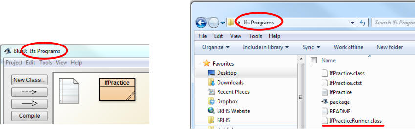
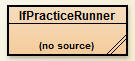

If Programs
Create a new class named IfPractice and copy the following code skeleton into it. Each method returns a dummy value so that the code will compile. Remove these statements when you go to implement each method.
public class IfPractice
{
public static boolean passwordChecker(int num)
{
return false; //dummy value
}
public static int compareTo5(int num)
{
return -99; //dummy value
}
public static boolean speedingTicket(int speed, boolean isRed)
{
return false; //dummy value
}
public static boolean in1To10(int num, boolean insideMode)
{
return false; //dummy value
}
public static int threeIntMax(int a, int b, int c)
{
return -99; //dummy value
}
public static int loneSum(int a, int b, int c)
{
return -99; //dummy value
}
}
passwordChecker - The passwordChecker method is meant to be a part of a security system that keeps your valuables locked tight. The attempt at a pin number will be passed in as a parameter. If the number is 1337 return a true, and return a false for all other cases.
Example:
passwordChecker(1234) --> false
passwordChecker(5555) --> false
passwordChecker(1337) --> true
compareTo5 - The compareTo5 takes
in a number as a parameter, compares it to the number 5 and returns an int that
signals one of three things:
If the parameter is less than the number 5, return a
1
If the parameter is equal to the number 5, return a 0
If the parameter is more than the number 5, return a -1
Example:
compareTo5(11) -->
-1
compareTo5(1) -->
1
compareTo5(5) --> 0
compareTo5(-8) --> 1
compareTo is a common method for objects to have. You will see more of this style in future programs
speedingTicket - The speedingTicket method is meant to return true if a speeding ticket is issued, and false if not. There are two parameters that are passed in. The speed int is how fast the car is going, and the isRed variable is a boolean which will be true if the car is red and false if not.
For most cars, they will recieve a ticket if the car is going above 65 miles per hour. If the car is red, a ticket is given for driving over 60 miles per hour.
Example:
speedingTicket(55,false) -->
false
speedingTicket(55,true) --> false
speedingTicket(64,false) --> false
speedingTicket(64,true) --> true
speedingTicket(70,true) --> true
Hint: Try and use nested if statements to accomplish this. Use one outer if statement to see if the car is red or not, and then inside each part determine if the car is speeding or not.
in1To10 - The in1To10 method is meant to detect when a number is within or outside of 1-10. If the parameter insideMode is true, then the program will check if num is between 1 and 10 (inclusive). When insideMode is false, then the program will check if the number is outside 1 and 10.
Example:
in1To10(5,true)
--> true
in1To10(5,false) -->
false
in1To10(1,true) -->
true
in1To10(10,false) --> false
in1To10(15,true) -->
false
in1To10(15,false) --> true
threeIntMax - the threeIntMax method takes in three ints as a parameter and returns the largest of the three ints. Do not use Math.max, this can be done with only if statements.
Example:
threeIntMax(1,2,3) -->
3
threeIntMax(2,2,-3) --> 2
threeIntMax(11,-2,8) --> 11
loneSum - the loneSum method takes in three ints as parameters. Their sum is calculated, but each value is only added if it is different than the other two parameters.
Example:
loneSum(1,2,3) -->
6
loneSum(2,2,3) --> 3
loneSum(-1,2,3) --> 4
loneSum(11,-2,3) --> 12
Checking Your Methods:
In order to check your methods, I have created a runner that will test many cases that you may not have thought of. You will not be able to see the code for my runner, so make sure that you've named your class and methods EXACTLY the same as they are given. Changing them will cause the runner to skip those methods and you won't be able to recieve full credit.
1) Download IfPracticeRunner.class. This is a class file and not a .java file, so it is not readable by a text editor.
2) Move the IfPracticeRunner.class to the project folder on your computer that matches your project name in BlueJ

3) Re-open your project in BlueJ. You should now have a class named IfPracticeRunner that says (no source) on it. You will not be able to look at the code, but it's already compiled so you can still run its methods.

4) Run the appropriate tester method and it will go through several tests, give you the correct answer and tell you the answer your method returned. If you see the message "All tests are correct", then you may move on. If not, fix the specific cases that give you incorrect results.